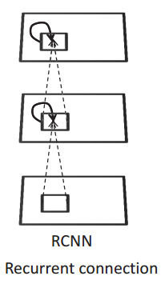

SVHN
Street View House Numbers (SVHN)是一个用于开发机器学习和对象识别算法的真实世界的图像数据集，对数据预处理和格式化的需求最小。它与MNIST相似(例如:图像是小的裁剪的数字)，但是包含了一个更大的标记的数据(超过60万的数字图像)，并且来自一个更加困难的、未解决的、真实的世界问题(在自然场景图像中识别数字和数字)。它是通过谷歌街景图片中的房屋号码获得的。

本文通过创建Recurrent Convolutional Neural Network[1]模型去对SVHN数据集进行识别。
Recurrent Convolutional Neural Network(RCNN)
简介
众所周知，神经网络是受了神经科学的启发，所以CNN与大脑的视觉系统有许多共同之处。但他们之间还是存在一个明显的区别：CNN通常是一前馈式(feed-forward)的架构，而在视觉系统中，神经元之间的连接确实多种多样的。我们可以将这些单纯的前馈式网络看成是对大脑中神经的一种粗略的拟合。
解剖证据显示，在新大脑皮质中，循环式的连接无处不在，循环的突触通常比前馈和上下(或反馈)突触的数量多。由于存在循环，自上而下的突触，虽然输入的图像是静态的，但物体识别实际上是一个动态的过程。这些突触的具体功能目前还不清楚，但人们普遍认为，循环的突触在内容文调节(context modulation)中起着重要的作用。
而内容(context)对目标识别也非常重要。Figure 1中，如果没有内容(脸)的帮助，我们很难识别黑色的曲线是鼻子。但在前馈模型中，由于感受野的原因，内容只能被高层次神经元捕捉。这样会导致，在识别小的的目标时，这些信息很难被底层神经元激活。为了可以利用信息，作者在深度学习模型的同一层中加入循环连接。作者希望具备了内容调节能力后，这些横向的连接可以提升模型的表现力。

Recurrent Convoluntional 层
Recurrent Convoluntional层(RCL)是RCNN的关键模块。RCL单元的的状态(state)会随着时间变化。在第k层feature map的位置(i, j)对应的特征公式为：
其中和分别表示前馈神经元的输入和循环神经元的输入。和分别为前向神经元的权重和循环神经元的权重。
公式为local response normalization(LRN), 其公式为：
K为feature maps的数量, 和为常量控制归一化的振幅。
公式(1)和(2)展示了RCL模块中，feature动态变化的过程。将RCL按T个Time Steps展开可以看成一个深为T+1的前馈式子网络。如下图左上角所示：
注意： 虽然循环输入在迭代中不断演变，但前向输入是保持不变的。当时RCL就是前向网络。
整体结构
RCNN由多个RCL堆叠而成，可以选择在其中插入Max pooling层。整个结构如图三右侧所示。为了节省计算量，第一层为标准的前馈式卷积层，其后跟着max pooling。在其上，连接着4个RCL模块，并在中间插入max pooling层。两个RCL模块之间是前馈式连接。论文中，作者提供的max pooling的stride和size分别为2和3。最后RCNN结构并没有采用传统的全连接层用于输出，而是使用的全局式的max pooling对每一个feature map输出一个最大值用于表示图片。
Code
我利用keras和tensorflow分别实现了RCNN网络，并对其中的结构做了一些修改。
Project： https://github.com/JimLee4530/RCNN
参考
[1] Liang, M., Hu, X.: Recurrent convolutional neural network for object recognition. In: Proceedings of the IEEE Conference on Computer Vision and Pattern Recognition